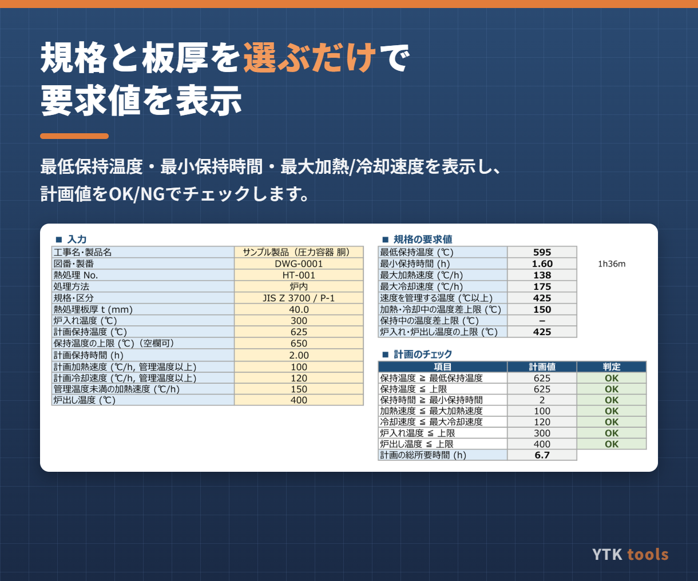
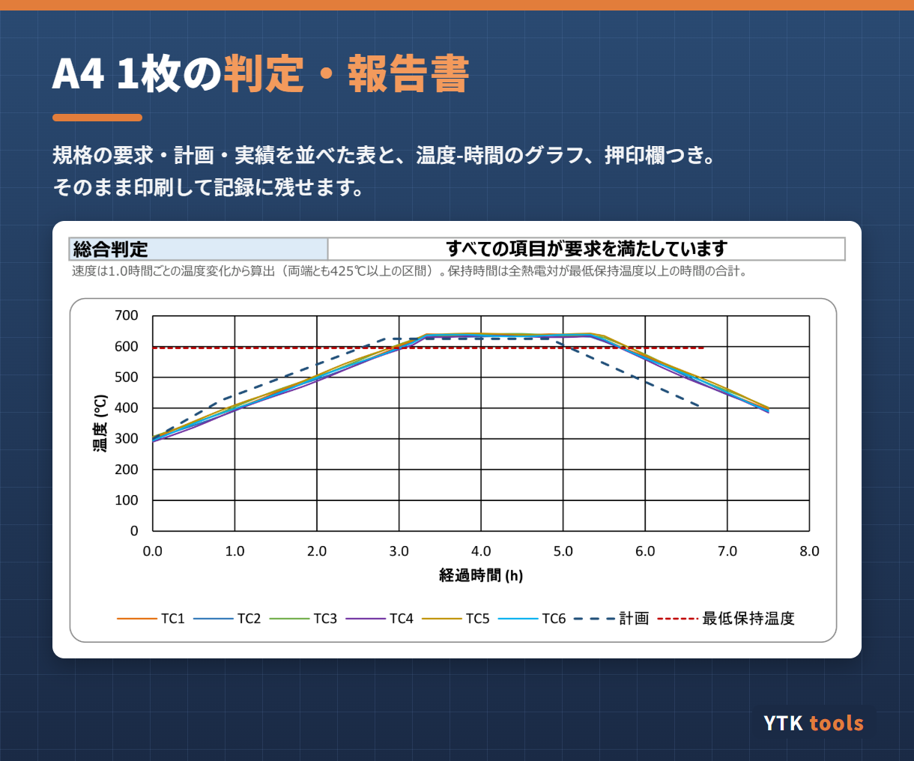

こんな場面で使えます
- PWHTの計画を立てるたびに、規格の表から保持時間や速度を手計算している
- 記録計のチャートを見ながら、加熱・冷却速度や保持時間を目で確認している
- 熱処理記録の確認結果を、毎回同じ形式で報告書に残したい
- 外注先の熱処理記録を受け入れるときのチェックを効率化したい
主な機能
- 規格・区分と熱処理板厚 t を選ぶと、最低保持温度・最小保持時間・最大加熱速度・最大冷却速度を表示
- 計画値（保持温度・保持時間・加熱/冷却速度・炉入れ/炉出し温度）をOK/NGで判定し、計画の温度-時間線図を描画
- 温度記録計のデータ（日時または経過時間、熱電対6点まで、最大2000行）を貼り付けるだけで実績を自動判定
- 判定項目：保持中の温度範囲、保持時間、最大加熱速度、最大冷却速度、加熱・冷却中と保持中の温度差、炉入れ・記録終了時の温度
- 加熱/冷却速度は「1時間ごとの温度変化」など、算出幅を指定して計算（記録間隔が細かくても判定がぶれません）
- 規格の要求・計画・実績を並べた判定・報告書（グラフ・押印欄つき、A4 1枚）
- 規格条件の表は編集でき、社内基準や契約仕様の区分も追加できます


収録している規格・区分（初期値）
| JIS Z 3700 | P-1、P-3、P-4、P-5、P-9A/9B |
|---|---|
| ASME Section VIII Div.1（UCS-56） | P-No.1、3、4、5A、9A |
| ASME Section VIII Div.2 | P-No.1、3、4、5A、9A |
初期値は公開情報をもとにした参考値です。規格の版や免除条件・代替条件は反映していません。ご使用前に最新の規格本文と契約・WPSの要求でご確認ください。
仕様・動作環境
| 形式 | Excelファイル（.xlsx）。マクロ不使用で、数式とグラフだけで動きます |
|---|---|
| 動作環境 | Windows版 Microsoft Excel（2016以降／Microsoft 365） |
| お届け | ご購入者のお名前（会社名）を記入したライセンス入りファイルをお送りします |
| 価格 | 3,000円（税込）・買い切り |
| 作成者 | YTK tools（溶接管理技術者 WES 特別級が作成） |
判定は熱処理記録の確認を補助するものです。最終的な合否は担当者が記録を確認してご判断ください。
使い方や背景をまとめた記事：PWHT 計画・記録チェックシートの解説記事（note）